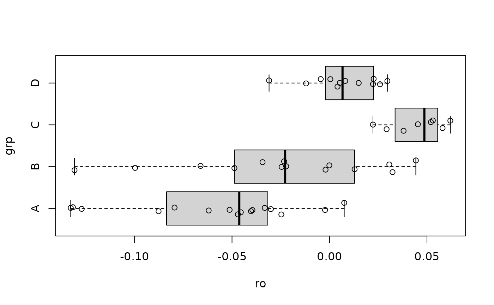

Performs Bartlett's test to assess the null hypothesis that variances are equal across all groups (samples) defined by the independent variable. This test assumes that the data within each group are normally distributed and is sensitive to departures from normality.
Arguments
- data
A data frame containing the variables specified in the formula.
- formula
A formula of the form
DV ~ IV, whereDVis the dependent (response) variable andIVis the independent (grouping) variable.- alpha
A numeric value specifying the significance level. Must be between 0 and 1. Default is 0.05.
- silent
A logical value. If
FALSE(default), results are printed to the console. IfTRUE, no output is printed.- summary
A logical value (default:
FALSE). IfTRUE, a summary table for the input data is returned.- misc
A logical value. If
FALSE(default), only essential parameters are returned. IfTRUE, additional auxiliary parameters are included in the output.
Value
A list containing the test statistics, p-value, degrees of freedom,
and optionally a summary table and/or auxiliary parameters,
depending on the values of summary and misc.
References
Bartlett, M. S. (1937). Properties of sufficiency and statistical tests. Proceedings of the Royal Society of London. Series A, Mathematical and Physical Sciences, 160(901), 268–282. https://doi.org/10.1098/rspa.1937.0109
Montgomery, D. C. (2017). Experiments with a single factor: The analysis of variance. In Design and analysis of experiments (9th ed., pp. 82–83). John Wiley & Sons. ISBN: 9781119299363
Examples
df0 <- roGFP[[1]]
out <- Bartlett_test(df0, ro ~ grp)
#>
#> ----------------------------------------
#> Bartlett's homogeneity of variance test
#>
#> Response: y
#>
#> Chi-Square: 18.4724
#> p-value: 0.00035
#>
#> #> Group variances are unequal.
#> ----------------------------------------
#>
boxplot(ro ~ grp, df0, horizontal = TRUE)
points(x = df0$ro, y = jitter(as.numeric(df0$grp), amount = 0.15))
